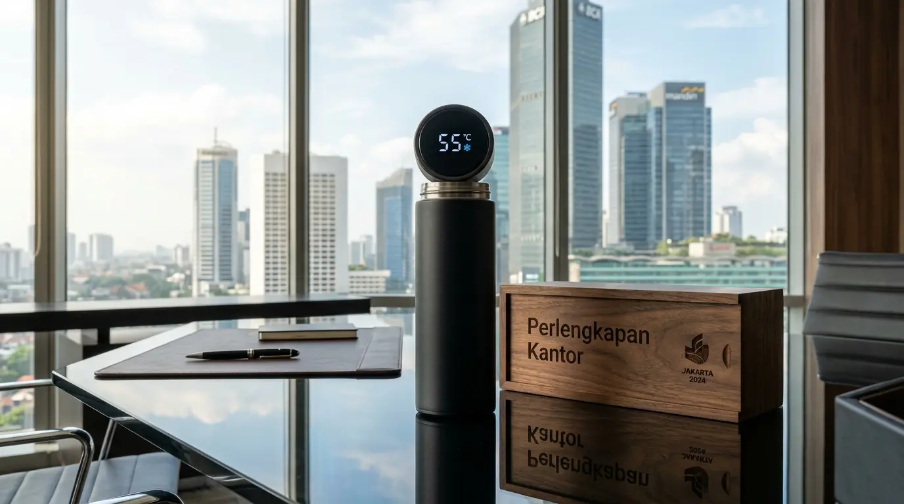

Tumbler Custom Logo Eksklusif Souvenir Kantor Jakarta
 Tim Redaksi Perlengkapan Kantor
24 Agustus 2026
8 Menit Baca
Tim Redaksi Perlengkapan Kantor
24 Agustus 2026
8 Menit Baca
Tumbler souvenir stainless steel meningkatkan daya ingat merek hingga puluhan persen karena digunakan secara berulang di lingkungan kerja harian. Penggunaan material food-grade stainless steel 304 dan teknologi vakum insulasi memastikan suhu minuman bertahan hingga belasan jam. Metode cetak UV flatbed dan grafir laser memberikan hasil branding logo yang presisi, elegan, serta tidak mudah luntur. Pengadaan tumbler promosi melalui penyedia Souvenir Kantor Jakarta menawarkan fleksibilitas anggaran dan pengerjaan tepat waktu. Pemesanan tumbler custom secara kolektif memberikan efisiensi biaya operasional pemasaran dengan dampak branding jangka panjang.
Tumbler souvenir custom logo adalah wadah minuman ramah lingkungan yang dirancang khusus dengan grafir atau cetakan identitas korporat untuk kebutuhan promosi dan apresiasi bisnis.
- Apa Itu Tumbler Custom Logo dan Manfaat Utamanya untuk Bisnis?
- Mengapa Tumbler Souvenir Menjadi Pilihan Utama Corporate Gift Korporat?
- Apa Saja Jenis Bahan Tumbler Souvenir Terbaik untuk Branding Perusahaan?
- Bagaimana Cara Memilih Penyedia Souvenir Kantor Jakarta yang Tepat?
- Apa Saja Kesalahan dalam Pengadaan Tumbler Souvenir Perusahaan?
- Pertanyaan Populer Seputar Tumbler Souvenir Custom Logo
- Kesimpulan Praktis
Apa Itu Tumbler Custom Logo dan Manfaat Utamanya untuk Bisnis?
Tumbler custom logo adalah botol minum portabel yang dicetak dengan identitas visual perusahaan sebagai sarana media promosi, hadiah apresiasi karyawan, maupun kenang-kenangan event bisnis.
Berdasarkan data Promotional Products Association International (PPAI) periode 2025-2026, produk tempat minum custom memiliki tingkat retensi penggunaan sebesar 89%, tertinggi di antara jenis merchandise korporat lainnya. Laporan Corporate Sustainability Gifting Report 2025 menunjukkan bahwa 74% perusahaan skala menengah hingga besar di Indonesia beralih menggunakan tumbler ramah lingkungan untuk mendukung program pengurangan sampah plastik sekali pakai di area perkantoran.
- 1 Penggunaan berulang meningkatkan eksposur merek
- 2 Mendukung gaya hidup sehat dan ramah lingkungan
- 3 Fleksibilitas desain yang tinggi
- 4 Persepsi nilai apresiasi yang tinggi
- 5 Tahan lama dan biaya per penggunaan rendah
Manfaat utama penggunaan wadah minuman kustom ini terletak pada efektivitas branding yang terus berulang tanpa biaya tambahan harian. Setiap kali penerima membawa botol minum tersebut ke ruang rapat, pusat kebugaran, atau kegiatan luar ruangan, logo perusahaan Anda terekspos secara natural kepada khalayak luas. Oleh karena itu, investasi pada wadah minuman berkualitas tinggi melalui penyedia Souvenir Kantor Jakarta memberikan pengembalian nilai pemasaran yang sangat optimal bagi citra profesionalitas perusahaan.

Mengapa Tumbler Souvenir Menjadi Pilihan Utama Corporate Gift Korporat?
Tumbler souvenir menjadi pilihan utama corporate gift korporat karena nilai fungsionalnya yang tinggi, fleksibilitas desain, dan impresi elegan yang dipancarkannya kepada para pemangku kepentingan.
Gaya Hidup Sehat
Mendukung kebiasaan minum air putihEfisiensi Promosi
Eksposur berkelanjutan bertahun-tahunPersepsi Nilai
Meningkatkan citra profesionalDalam lanskap bisnis modern, memberi hadiah yang benar-benar berguna dalam aktivitas harian merupakan kunci utama membangun hubungan jangka panjang yang positif.
Alasan krusial mengapa produk ini sangat diminati meliputi:
- Aksentuasi Gaya Hidup Sehat: Mendukung kebiasaan minum air putih yang cukup bagi para pekerja di tengah padatnya jadwal kantor.
- Efisiensi Promosi Berkelanjutan: Produk dapat bertahan bertahun-tahun sehingga eksposur identitas visual bisnis berlangsung secara konsisten.
- Persepsi Nilai yang Tinggi: Bahan berkualitas memberikan kesan mewah, yang secara langsung menaikkan citra profesionalitas pemberi hadiah.
- Keberagaman Pilihan Model: Tersedia dalam variasi ukuran, warna, dan fitur teknis seperti penunjuk suhu digital atau insulasi ganda.
Apa Saja Jenis Bahan Tumbler Souvenir Terbaik untuk Branding Perusahaan?
Jenis bahan tumbler souvenir terbaik untuk branding perusahaan mencakup stainless steel 304, kaca borosilikat, serta plastik bebas BPA (BPA-free) yang dapat disesuaikan dengan profil acara dan alokasi anggaran.
Stainless Steel 304
Insulasi vakum ganda, tahan lama, cocok untuk grafir laser.
Kaca Borosilikat
Estetika minimalis, tahan panas, dengan cover silikon.
Plastik BPA-Free
Ringan, variasi warna, ekonomis untuk skala besar.
Memahami perbedaan spesifikasi bahan sangat penting agar hasil cetakan logo tampil optimal dan tahan lama.
Stainless Steel Vacuum Insulated (Termos Digital)
Bahan stainless steel grade 304 berteknologi double-wall vacuum insulation merupakan standar tertinggi untuk wadah minuman korporat. Material ini mampu menjaga suhu air panas maupun dingin hingga 12-24 jam. Dilengkapi penutup berlayar LED suhu digital, tipe ini sangat pas dipadukan dengan teknik branding grafir laser untuk memberi kesan futuristik dan eksklusif.
Kaca Borosilikat dengan Cover Silicone / Kayu
Tumbler berbahan kaca borosilikat tahan panas dilapisi pelindung silikon atau ornamen kayu menghadirkan estetika minimalis dan bersih. Jenis ini sangat disukai oleh generasi pekerja muda dan cocok dijadikan isi paket apresiasi pada acara seminar maupun peluncuran produk baru.
Plastik BPA-Free Bebas Bahan Kimia Berbahaya
Untuk kebutuhan pembagian skala besar seperti acara lari bersama, kegiatan luar ruangan, atau pameran publik, bahan plastik BPA-Free menawarkan bobot yang ringan dan variasi warna yang beragam. Opsi ini memberikan nilai ekonomis tinggi tanpa mengorbankan keamanan kesehatan pengguna.
Bagaimana Cara Memilih Penyedia Souvenir Kantor Jakarta yang Tepat?
Penyedia souvenir kantor Jakarta yang tepat dapat dipilih berdasarkan portofolio pekerjaan sebelumnya, ketersediaan sampel fisik, jaminan ketepatan waktu produksi, serta teknologi cetak logo yang digunakan.
Portofolio
Lihat hasil pekerjaan sebelumnyaSampel
Cek kualitas bahan & cetakTeknologi
UV Flatbed & Laser EngravingGaransi
Penggantian produk cacatMengingat nama baik perusahaan Anda dipertaruhkan pada produk yang dibagikan, pemilihan mitra vendor tidak boleh dilakukan secara sembarangan.
Langkah taktis mengevaluasi penyedia merchandise meliputi:
- Penilaian Ketepatan Warna dan Logo: Pastikan penyedia mampu menyesuaikan kode warna logo perusahaan secara presisi pada permukaan produk.
- Pengujian Kualitas Cetak: Uji ketahanan hasil cetak UV atau grafir laser agar tidak mudah terkelupas saat dicuci berulang kali.
- Kecepatan Distribusi dan Kapasitas Produksi: Pilih vendor yang sanggup memenuhi volume pesanan besar dalam tenggat waktu yang ketat.
- Garansi Kerusakan Produk: Pastikan ada mekanisme penggantian langsung jika terdapat unit yang cacat selama proses pengiriman.
Untuk memenuhi seluruh standar kualitas tersebut, Anda dapat langsung memesan tumbler custom logo eksklusif melalui layanan Souvenir Kantor Jakarta tepercaya milik kami.
Apa Saja Kesalahan dalam Pengadaan Tumbler Souvenir Perusahaan?
Kesalahan dalam pengadaan tumbler souvenir perusahaan mencakup pemilihan bahan yang mudah bocor, proses cetak logo yang asal-asalan sehingga cepat mengelupas, serta memesan secara mendadak tanpa memperhitungkan waktu pembuatan sampel.
Bahan Mudah Bocor
Kualitas rendah merusak citra perusahaan
Cetak Asal-asalan
Logo cepat mengelupas dan memudar
Pesanan Mendadak
Waktu produksi tidak cukup untuk QC
Memilih produk berharga terlalu murah tanpa standar kualitas food-grade justru dapat merusak citra perusahaan di mata penerima.
Selain itu, mengabaikan kesesuaian antara model botol dengan profil penerima sering kali membuat souvenir tidak digunakan secara maksimal. Konsultasikan kebutuhan merchandise bisnis Anda bersama tim profesional Souvenir Kantor Jakarta untuk memastikan seluruh proses kurasi hingga pengiriman berjalan lancar dan tepat target.
Pertanyaan Populer Seputar Tumbler Souvenir Custom Logo
Butuh Tumbler Custom Logo Eksklusif?
Konsultasikan kebutuhan tumbler custom logo untuk acara perusahaan Anda dengan tim kami untuk mendapatkan rekomendasi produk dan penawaran terbaik.
Konsultasi SekarangKesimpulan Praktis
Menggunakan tumbler souvenir custom logo adalah langkah pemasaran yang sangat efektif untuk membangun reputasi perusahaan dan menjaga keterikatan dengan mitra bisnis. Dengan memilih bahan berkualitas tinggi serta memercayakan pengerjaannya kepada penyedia Souvenir Kantor Jakarta yang berpengalaman, Anda memastikan pesan promosi perusahaan tersampaikan secara elegan dan bertahan lama.